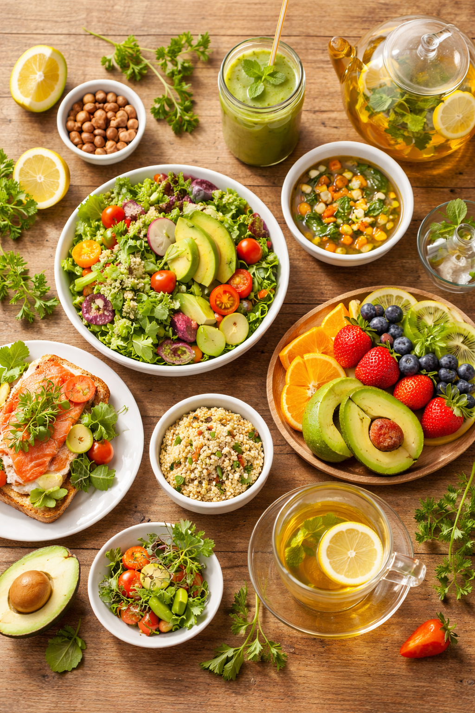

期間限定
SONOKOの8週間献立セットが、いま30%OFF。
食事を削らずに整えたい人向けの食品セットです。コラボセールによる割引で、終了時期は未定。内容の詳細はこちらにまとめています。
セール価格を確認する ＞こんにちは、栄養士のYuriです。
「ドレスの試着までにあと3kg痩せたい！」
「背中のハミ肉をなんとかしたい…」
そんな焦りから、「サラダだけ食べる」「夕食を抜く」といった無理なダイエットをしていませんか？
挙式直前の栄養不足は、もっとも危険です。
脂肪ではなく「筋肉」と「水分」が抜けてしまい、肌はカサカサ、髪はパサパサ、デコルテはげっそりと貧相になってしまいます。
「じゃあ、どうすればいいの？」
その答えは、意外かもしれませんが「しっかり食べること」なんです。
花嫁ダイエットの正解は
「代謝を上げる」こと

美しいラインを作るには、代謝を上げて脂肪を燃やす必要があります。
そのためには、バランスの取れた食事で「燃やすための材料」を体に補給してあげなければなりません。
でも、忙しい準備期間中に、カロリー計算や自炊をするのは大変ですよね！
そこで今回、栄養士の私が自信を持っておすすめできる「花嫁のための駆け込み寺」をご紹介します。
その「肌荒れ」
食べ物が原因かも？
好きな食べ物は、今の体内の栄養バランスと肌状態を映す鏡。
当てはまるものをタップしてチェック！
🍰 甘いものが大好き
診断：脂性肌～混合肌（ニキビ・黄ぐすみ）
糖質の摂りすぎはTゾーンのベタつきや、肌が黄色くくすむ「糖化」の原因に。ハリの低下にも要注意です。
👉 おすすめケア：低GIのナッツをおやつにするか、食事で血糖値を急上昇させない工夫を。
🌶️ 辛いものが大好き
診断：脂性肌～敏感肌（炎症リスク）
発汗作用で皮脂が増えるほか、刺激で肌の赤みや炎症を引き起こしやすくなっています。
👉 おすすめケア：抗酸化作用のあるトマトなどの野菜をたっぷり摂って炎症を鎮火！
🍤 油っこいもの・お菓子が大好き
診断：脂性肌（毛穴詰まり・ニキビ）
悪い油の摂りすぎは、そのままドロドロの皮脂となり毛穴を詰まらせます。酸化した油は肌老化の最大要因！
👉 おすすめケア：揚げ物を減らし、SONOKOのような「ノンオイル調理」で肌を休ませて。
🧂 濃い味・塩辛いものが大好き
診断：乾燥肌～むくみ肌
塩分過多は体内の水分を奪い、肌の乾燥を招きます。同時に顔のむくみも引き起こすダブルパンチ。
👉 おすすめケア：カリウムを含む野菜や海藻を摂って、余分な塩分を排出しましょう。
「そうだけど、食事は変えられない…」
そんな貴方にはこれがおすすめ👇
SONOKO式 8週間
ダイエット献立
（1週間お試し）
美容家・鈴木その子氏が提唱した「食べて美しく痩せる」メソッドを詰め込んだ、調理不要の献立セットです。
私がこれをおすすめする理由は、以下の3つのポイントが「花嫁美容」に完璧にマッチしているからです。
1. 添加物無し・ノンオイル調理
肌荒れの大敵である「悪い油」や「食品添加物」を徹底的にカット。
消化への負担が少ないため、ダイエットだけでなく、挙式前の「内側からの肌ケア」としても非常に優秀です。
2. 温めるだけで
「完璧な栄養バランス」
1日3食＋間食も含めて、カロリーと栄養バランスが計算され尽くしています。
調理は電子レンジやお湯で温めるだけ。「今日は何を食べよう…」と悩むストレスから解放され、空いた時間をエステや準備に使えます。
3. やつれない健康的な美しさ
しっかり食べるので、空腹によるイライラ（マリッジブルーの原因！）も防げます。
げっそりするのではなく、内側から満たされた、ハリのある美しさを目指せます。
💒 挙式前の
1週間集中ケア！
いきなり8週間は大変でも、「お試し1週間セット」なら取り入れやすいはず。
「前撮り前の1週間」や「挙式1ヶ月前の調整」として、プロ渾身の食事に頼ってみませんか？

＼ エステ1回分よりお得！ ／
お試しセットを見てみる ▶※完売しやすいため、在庫状況は公式サイトでご確認ください
⚠️ 栄養士からの緊急アドバイス
挙式まで「3ヶ月」を切っていませんか？
食事改善は「内側（肌）」を変えますが、「外側のライン（二の腕・背中）」を変えるには時間がかかります。
もし時間がないなら、プロの物理的なアプローチ（マシンや矯正）を併用するのが、当日後悔しないための唯一の近道です。